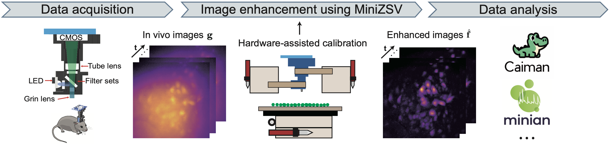

MiniZSV
Modeling and Hardware-Assisted Calibration for Miniature Fluorescence Microscope
With the Biophotonics Lab, ShanghaiTech

- Proposed a pipeline combining Zernike-based PSF modeling and spatially-varying deconvolution for Miniscope images
- Built a continuous spatially-varying PSF map from calibration data, more robust and accurate than SVD-based models
- On in vivo data, recovered more active neurons and resolved overlapping vessels for cleaner hemodynamic analysis